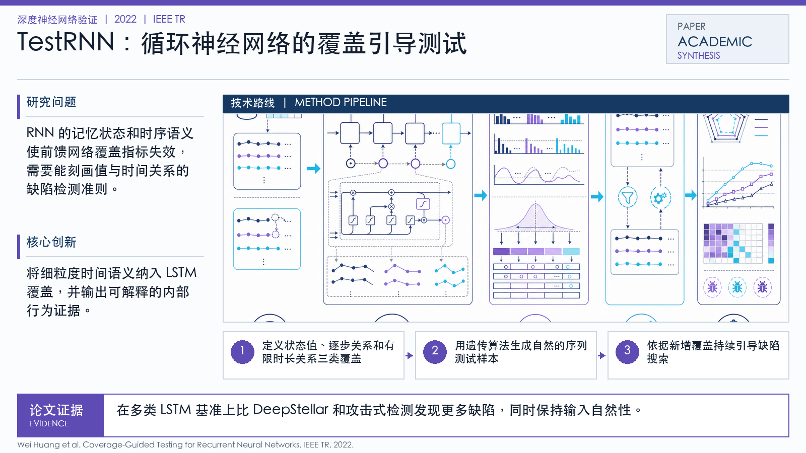

Problem
解决的问题
RNN 的记忆状态和时序语义使前馈网络覆盖指标失效，需要能刻画值与时间关系的缺陷检测准则。
Verification on DNNs · 2022 · IEEE TR
Coverage-Guided Testing for Recurrent Neural Networks
Problem
RNN 的记忆状态和时序语义使前馈网络覆盖指标失效，需要能刻画值与时间关系的缺陷检测准则。
Value
在多类 LSTM 基准上比 DeepStellar 和攻击式检测发现更多缺陷，同时保持输入自然性。
Paper-grounded Academic Summary
该代表页依据原文摘要、贡献段与方法图注生成。方法视觉由 ImageGen 按论文证据逐篇绘制，中文研究问题、技术路线、创新点与实验结论采用确定性排版，以保证内容与字符准确。
打开原文 PDF
Technical Route
Innovation